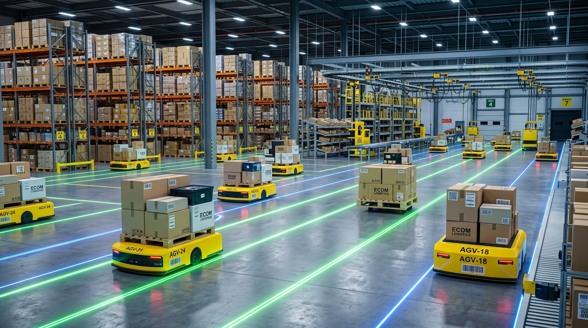
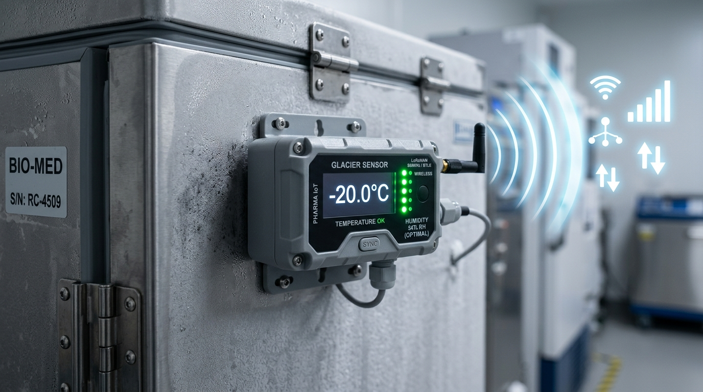
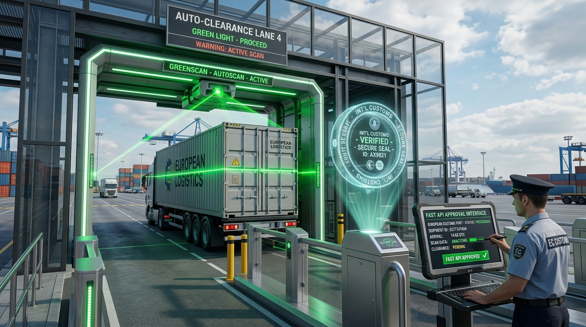

We combine physical logistics assets with state-of-the-art predictive algorithms to eliminate bottlenecks and optimize transit speeds.
Machine learning models analyze port congestion, wave forecasts, and customs clearance queues to provide 99.9% accurate arrival times.
Self-driving automated guided vehicles inside our San Francisco smart warehouses handle 10,000 package sorts per hour seamlessly.

Continuous monitoring of temperature, shock, humidity, and location for sensitive pharmaceuticals and high-value cargo.

Instant digital filing with international customs authorities reduces port clearance delays from days to minutes.
